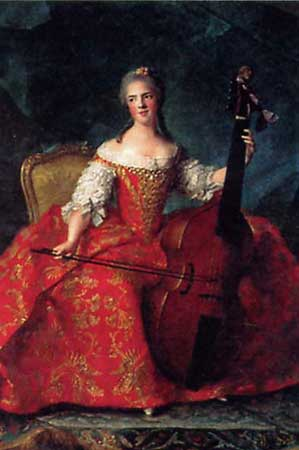

|
Исторический
экскурс
|
||
 |
У
корсета большая многовековая история.
С помощью корсета и других дополнений ( плечики, накладки на
бедра и др.) люди издавна старались либо подчеркнуть красоту естественных
форм женского тела, либо маскировать их, придавая фигуре желаемые
пропорции, а костюму - модные силуэтные формы. В зависимости от художественного стиля эпохи, требований моды одежда меняла свою форму, размеры, пропорции либо не нуждалась в корсете, либо наоборот, корсет становился основой, каркасом не только женской, но и мужской одежды. В этом разделе Вы узнаете о всех этапах развития от момента появленич до современности не только женских корсетов, но также мужских и детских. |
|
| Жан Марк
Натье. Мадам Генриетта с виолончелью. Фрагмент. 1754 г. Версаль. |
Костюм 1754 г. Портрет княгини Е.А. Лобанова - Ростовская | |
| Модуль разбит на шестнадцать страниц, каждая из которых занимает самостоятельное место в теме и является полноценным законченным элементом. | ||
| Темы
страниц: |
||